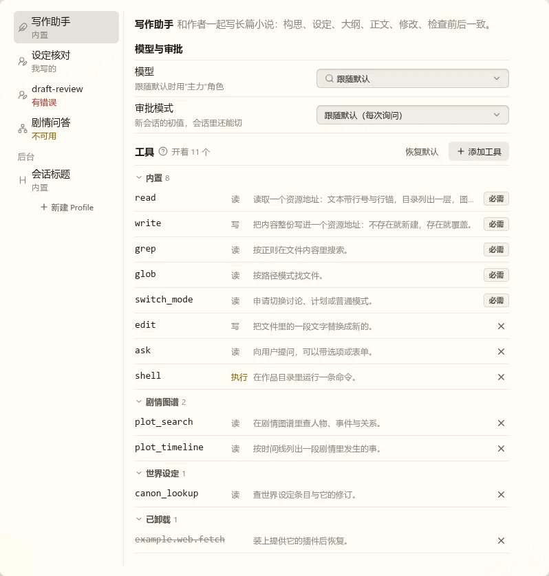
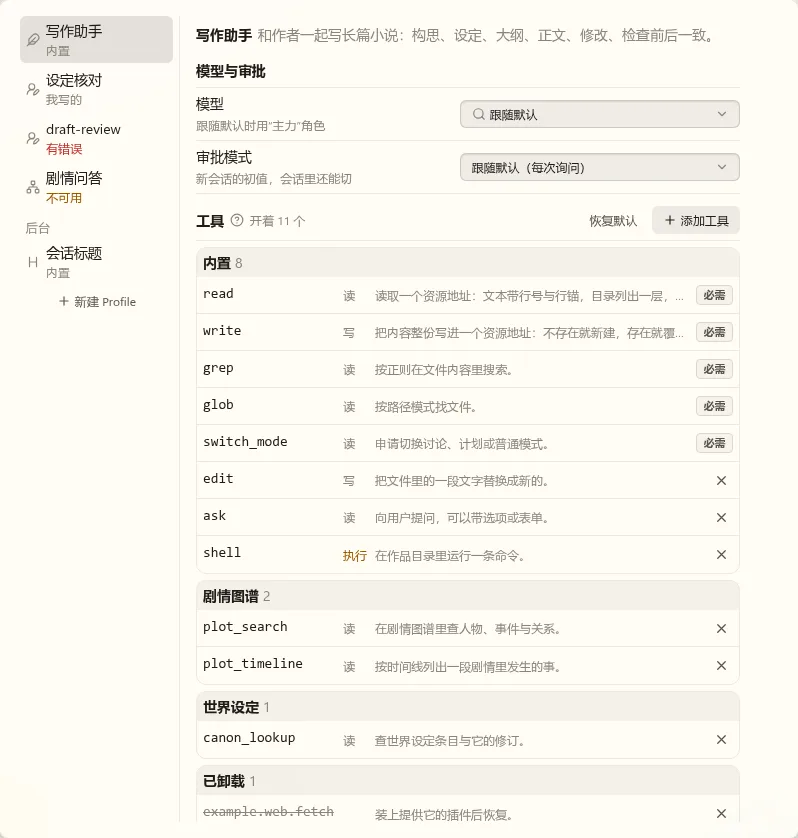
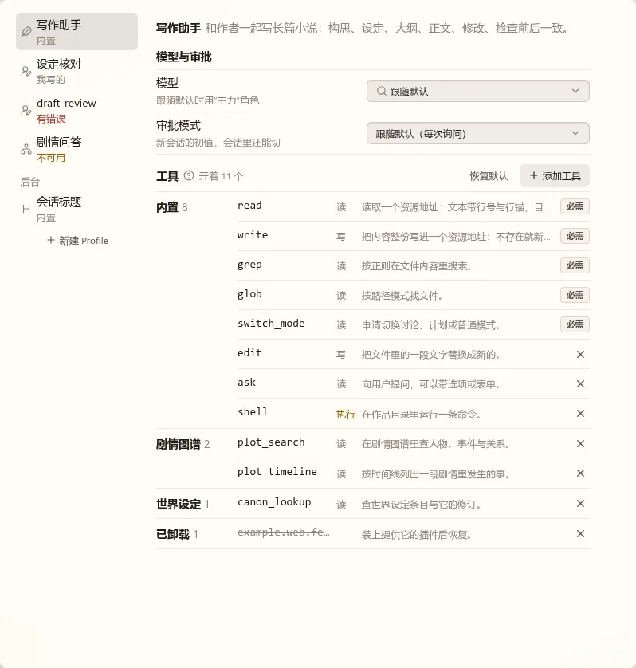
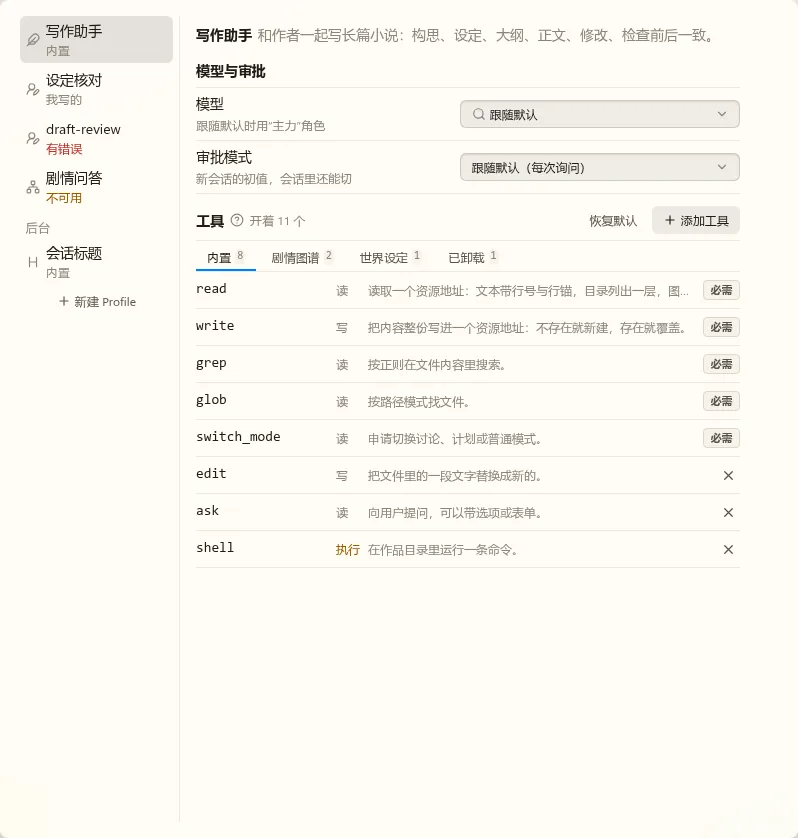

都是静态稿，用真实的 nb-ui 组件和主题，数据是写死的样本（“世界设定”工具是编的）。第 3 轮只问工具怎样分组。
我看了“服务商与模型”：模型列表的组头有折叠箭头，下面每个模型一行，行之间有分隔线。上一稿每个工具占两行、没有分隔线，组头埋在里面，所以不明显。
四种都改成了一个工具一行，名字、等级、说明各占一列上下对齐，说明放不下时截断、悬停看全文。添加工具对话框的分组跟着你选的样式改。

和模型列表一个样，看过那边就会用；能折叠，内置的工具多时可以收起来；窄屏不用另做。组头还是小字，是四种里最不抢眼的。

边界最清楚。但框和头部底色占地方，页面最长；规范不提倡“带底色的头部加内容大框”的堆叠，别的设置页也没有这样画的。

扫一眼就能看出有哪些提供者，也不多占高度。说明会窄约 100px，截断更多；页面不到 600px 时组名要改回放在上面；不能折叠。

页面最短，工具再多也放得下。但要逐个点开才能看全开了什么，这一节的用处本来就是看全。